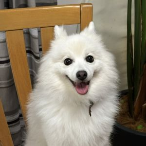
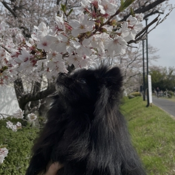

- トップ >
- しぇるころの基本情報
基本情報
しぇるところりんについて紹介します♡
しぇる
2016年に我が家にやってきたしぇるちゃん♡初めてのわんちゃんでとっても嬉しかったのを覚えています♪
最近はおばあちゃんになってきて家にいても寝てることが多いけど「お散歩いこ！」というと元気になってうれしそうに興奮して部屋中を走り回る姿がかわいいです♡
いつまでも元気よく過ごしてほしいです.。o○
ママのベッドが大好きでよく二階にいるので帰ってきてもたまに無視されますｗｗｗ
日中はよく私たちが見ているドラマをよく見ています(≧▽≦)
ゾンビ系が苦手で恋愛ものを特に見ています（笑）
自認人間な我が家のプリンセスしぇるちゃんです💕
| 名前 | しぇる |
|---|---|
| 犬種/性別 | 日本スピッツ/女の子♀ |
| 毛色 | 白 |
| 誕生日 | 2016年2月12日(10歳) |
| 生まれた場所 | 香川県 |
| 体重 | 7㎏ |
| 性格 | おっとり、嫉妬深い |
| 好きなもの | 鶏肉、お散歩、ママのベッド |

ころりん
2020年のコロナ禍に我が家にやってきたころりん。名前の由来はコロナウイルスのころとオリンピックのりんからきています♪
連れて帰った日に車でころころと転がっていたことも名前の由来の一つです(*^^*)
とっても甘えん坊で人間としぇるちゃんが大好き💕
しぇるちゃんにうざがられてもめげずにアピール姿が愛しいです😍
ごはんが大好きでお散歩が大嫌いなころりんくん！ダイエットのためにもお散歩頑張り中です！（笑）
やんちゃだけど憎めない甘えんぼボーイころりんくんです(^^)
| 名前 | ころりん(ころ) |
|---|---|
| 犬種/性別 | ポメラニアン/男の子♂ |
| 毛色 | 黒(ところどころちょっと白) |
| 誕生日 | 2020年2月22日(6歳) |
| 生まれた場所 | 滋賀県 |
| 体重 | 2.5㎏ |
| 性格 | 甘えん坊、やんちゃ |
| 好きなもの | ごはん、抱っこ |
